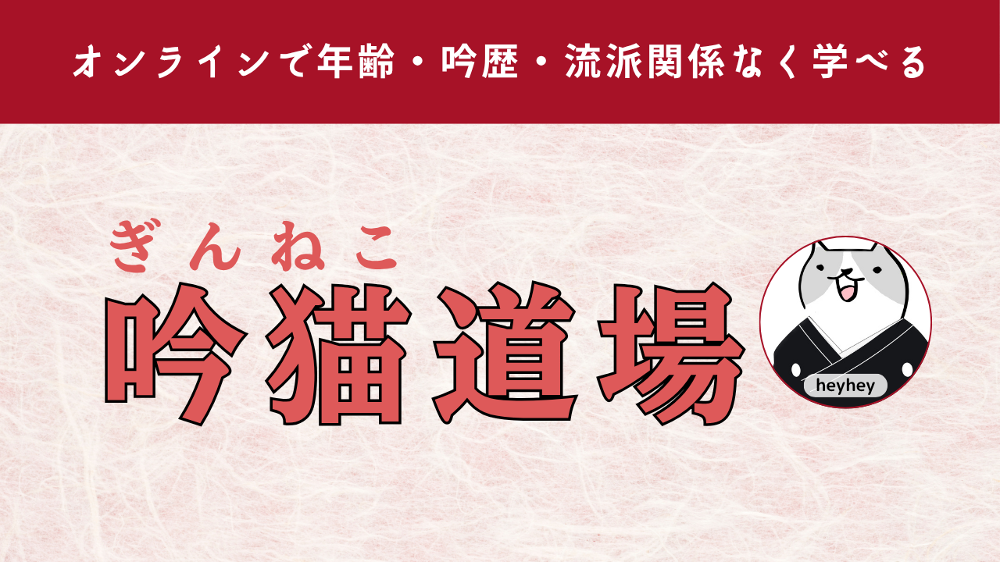

もっと深く学びたい方へ
無料ツールや動画で学んだあと、継続して学びたい方は、吟ねこコミュニティ（LINEのオープンチャット）や吟猫道場（オンライン詩吟教室）もお気軽にご検討ください。ひとりで練習を続けるのが不安なときも、仲間と一緒なら楽しく続けられます。
吟ねこコミュニティ（LINEのオープンチャット）
詩吟ちゃんねるの裏話や、吟猫コンダクターの使い方・更新情報、詩吟に関するちょっとした話題を共有する場所です。見るだけでも、詩吟の交流をしてもOK。みなさんにとって心地よい場所になるよう運営しています。
参加のときにニックネームとアイコンを設定する画面が開きます。本名を入れなければ匿名のままご参加いただけますので、安心してのぞいてみてください。

吟歴・流派・場所を問わない、オンライン詩吟教室「吟猫道場」
もっと本格的に続けたい方には、オンライン詩吟教室「吟猫道場」がおすすめです。年齢も吟歴も流派も、お住まいの場所も関係なく、誰でも気軽に参加できます。月額990円で、いつでも退会できる続けやすい仕組みです。
- 週2回配信される、メンバー限定の詩吟アドバイス動画
- これまでのアドバイス動画がすべて見放題
- メンバー同士で交流できる限定コミュニティ
- 自分の詩吟を録音してメールで送ると、YouTubeメンバー限定動画で個別にアドバイスがもらえます
学びのステップ
詩吟の学び方に、決まった順番はありません。ご自身のペースに合わせて、少しずつステップを進めてみてください。
| ステップ | 内容 | 費用の目安 |
|---|---|---|
| 無料 | YouTube動画や、詩吟学習ツールで基本を学ぶ | 無料 |
| 交流 | オープンチャットで質問したり、仲間と交流したりする | 無料 |
| 本格 | 吟猫道場に参加して、継続的にアドバイスをもらう | 月額990円 |
よくある質問
オープンチャットは無料ですか？
はい、無料でご参加いただけます。詩吟について気軽に質問したり、他の方と交流したりできる場所です。準備が整い次第、このページからご案内します。
吟猫道場の料金はいくらですか？
月額990円です。YouTubeメンバーシップの仕組みを利用しており、いつでも退会いただけます。この価格で、週2回のメンバー限定アドバイス動画や過去動画の見放題、限定コミュニティをご利用いただけます。詳しくは吟猫道場の詳細ページをご覧ください。
流派が違っても参加できますか？
はい、大丈夫です。吟猫道場は吟歴・流派・お住まいの場所を問わず、誰でも参加いただけるオンライン詩吟教室です。オープンチャットも同じように、流派を気にせずご参加いただけます。
初心者でも大丈夫ですか？
もちろんです。専門用語を使わず、分かりやすい説明を心がけています。詩吟を始めたばかりの方も、経験の長い方も、それぞれのペースで気軽にご参加いただけます。まずは始め方ガイドもあわせてご覧ください。